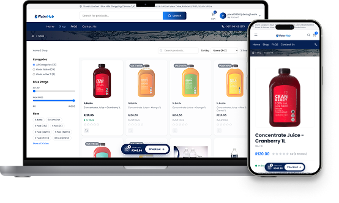

BMS
Business management software that brings invoicing, payroll, cash flow, and reporting into one place.
Business management software that brings invoicing, payroll, cash flow, and reporting into one place.

A CRM built to help daycare teams organise their records and manage day-to-day operations.

A workshop management system that lets customers book a vehicle service, report issues, and track the progress of their repairs.

An online store and dashboard for selling water and other products, managing stock, and tracking orders.